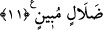

terkip edici olması gerektiğine dikkat çekilmektedir. O da tek olan Yaratıcı’dır.
Allah hepimizi, sanatının hârikulade yönlerini ve kudretinin fevkalâde tecellîlerini
tefekkür etmeye muvaffak kılsın! Bilesin ki, akıllı kimselerin akılları ve zeki kimselerin
zekâları bitkiler, ağaçlar, onların hayret verici yönleri, fayda ve zararları konusunda
yetersizdir, şaşkındır. Nasıl olmasın ki? Sen de o bitki ve ağaçların farklı şekillerini,
değişik renklerini, hayrete düşürecek tarzda yapraklarının şekillerini ve çiçeklerinin
kokularını müşâhede edip durmaktasın. Onların sâhip oldukları renklerin her biri kendi
içinde kısımlara ayrılmaktadır. Mesela gül rengi, mor, altın sarısı, şarap rengi, üzüm
rengi, akik rengi, kan rengi, lâk rengi/koyu kımızı ve benzeri renkler kırmızı olmakta
müşterek olmakla birlikte birbirinden farklıdır.
Sonra bitkilerin ve ağaçların kokuları hem hayret verici hem de birbirinden farklıdır.
Kokularının güzelliği, meyve, tane ve yaprak şekillerinin olağanüstülüğü konusunda
hepsinin ortak yönleri vardır. Her bir rengin, kokunun, tadın, yaprağın, meyvenin,
çiçeğin, danenin bir başkasına benzemeyen hususiyetleri vardır. Bunlardaki hikmetin
hakikatini ancak Allah bilir. İnsanın bunlar hakkında bilmediğine nisbetle bildiği,
denizden damla gibidir.
Allah Teâlâ Hz. Âdem ile Havva’yı cennetten çıkardı. Ayrılık ateşiyle uzun yıllar
ağladılar. Öyle ki göz yaşlarından zencefil ve benzeri bitkiler bitti. Böylece Allah Hz.
Âdem ve Havvâ’nın gözyaşlarını zayi etmedi. Nitekim Âdem (a.s.)’ın nutfesini de zayi
etmeyip ondan da Ye’cûc ve Me’cûc’ü yarattı. Çünkü, nutfenin sadece şehvet yoluyla
inme şartı yoktur ki hiçbir peygamberin ihtilam olmadığı söylenerek bu reddedilsin.
Bununla alâkalı açıklama daha önce geçmişti.
11. İşte bunlar Allâh’ın yarattıklarıdır. Şimdi (ey müşrikler!) O’ndan başkasının
ne yarattığını bana gösterin! Hayır (gösteremezler)! Zâlimler açık bir sapıklık
içindedirler.
“İşte bunlar”; zikredilen gökler, yer, dağlar, canlılar ve bitkiler “Allâh’ın
yarattıklarıdır. Şimdi” ey müşrikler! “O’ndan başkasının” yâni Allah Teâlâ’dan başka
ibâdette O’na ortaklar edindiklerinizin “ne yarattığını bana gösterin!” tâ ki onlar
kulluk edilmekte O’na ortak olmayı hak etsinler!
“Hayır (gösteremezler)! Zâlimler açık bir sapıklık içindedirler.” Burada onların,
yâni Kureyş kâfirlerinin paylanmasından, bakıp düşünene gizli kalmayacak şekilde (her
yönüyle) açık olan sapıklıklarını, haktan bâtıla kaymalarını tescil etmeye geçiş vardır.
Zamir kullanacak yerde “zâlimler” kelimesinin açıkça zikredilmesi, onların ortak